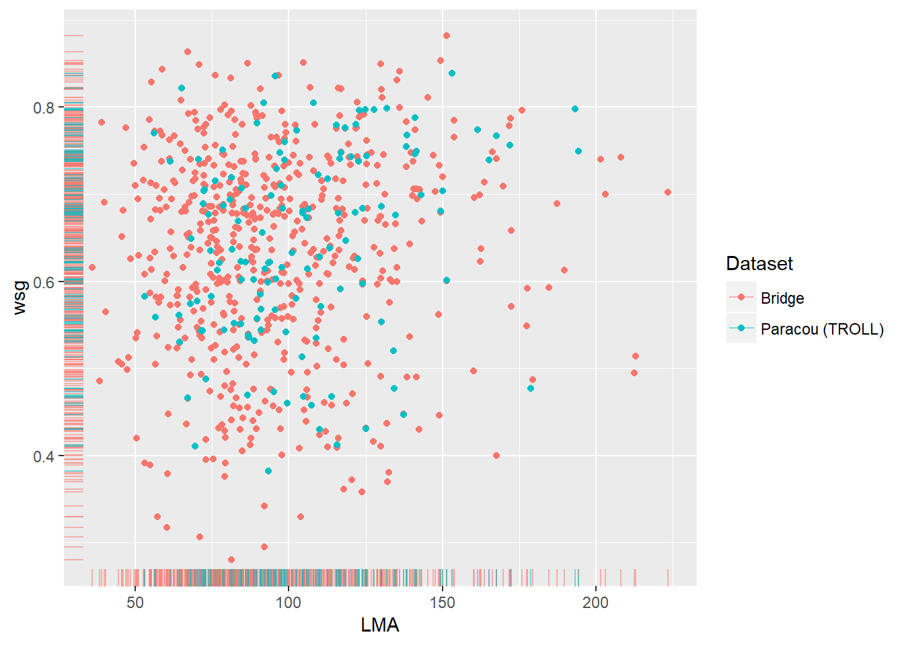

4 Including more species in TROLL simulations
4.1 Introduction
Biodiversity affects most of the ecosystemic characteristics, among others productivity, stability, resistance to invasion (Huston et al. 2001; Lyons & Schwartz 2001). Recent advances in Functional Ecology suggest that the most relevant approach to study ecosystem functioning is through its functional composition, that can be assessed using functional traits. Functional traits are formally defined as morpho-physio-phenological traits that indirectly impact fitness via their effect on growth, survival, and reproduction (Violle et al. 2007). Accounting for functional traits and their effects on processes is necessary to model forest dynamics with a finer accuracy. Classical models often use a limited number of species groups defined according to restrictive criteria (Maréchaux & Chave 2017). TROLL directly uses 5 functional traits (LMA, Nmass, Pmass, and wsg) and 2 allometric parameters at the species-specific level. All are obtained from real data.
We included more species to the existing dataset used for TROLL simulations. This choice was motivated by both theoretical and practical reasons. The aims were either to enhance the coverage (in number of trees) for Paracou simulations (see next section) and to have enough species to simulate large plots, for the logging experiment. We hierarchically inferred species-specific means for leaf traits, stem traits and allometric parameters, with the BRIDGE dataset. We estimated the 99th quantiles of species diameter from the whole Guyafor dataset, pooled with BRIDGE. We used Predictive Mean Matching to complete the dataset beforehand, due to a variable -Pmass- that considerably limited our possibilities. The model blueprints were generously provided by Fabian Fischer (EDB, Toulouse).
4.2 Context and Problem
4.2.1 The initial species list
TROLL’s current species-specific trait dataset contains 8 variables: \(LMA\), \(Nmass\), \(Pmass\), \(wsg\), \(hmax\), \(dmax\), \(ah\), and \(Freg\) (see table 3.1, in the previous section). We decided to let apart the regional frequency of a species, which are adapted for each simulation depending on the forest composition and simulation aims.
4.3 Can we represent Paracou plots composition with TROLL’s species list ?
Paracou plots display a high proportion of species that are absent of TROLL dataset (Figure 4.1). Based on preliminary exploration of the Paracou dataset, we noticed that the proportion of individuals belonging to missing species is slightly reducing over time, possibly linked with an increase in botanical determination reliability. This proportion is rather low compared to the proportions of missing species. However, such proportions were questioning the a priori validity of our intent to simulate real forest plots. These species are mainly less common ones and may be absent either because they were not present in the plots sampled in BRIDGE or because their number of observations did not allow including them.
Figure 4.1: Total number of species, proportions of missing species and individuals in two censuses (1984,1992) for twelve Paracou Plots (1-12). A: Total number of species in the plots, at the plot scale; B: Proportion of individuals belonging to missing species; C: Proportion of missing species; All are computed at the plot scale. Colors represent the census years (red: 1984, blue: 1992)
4.3.0.1 Missing species and individuals
4.3.0.2 Functional representativity
Figure ?? compares the distribution of LMA and wsg for BRIDGE and species from TROLL’s list that occur in Paracou. These traits are linked to construction costs for the trees and are part of the leaf and wood economics spectra (Wright et al. 2004; Chave et al. 2009). According to Baraloto et al. (2010), both spectra are decoupled and represent two components of the plants’ strategy. In TROLL, LMA is linked to leaf lifespan, photosynthesis In Figure ??, the fraction of TROLL species list that matches with Paracou (137 species) is rather representative of the bridge dataset (which we assume to be itself well representative of the real forests’ functional traits ranges). However, each plot had from 70 to 115 species matching with those of TROLL, out of 300 species present As explained above, not only the number of species matching those of TROLL was low, but also, the corresponding number of individuals was problematic. We thus decided to perform a new trait means inference to reach a better representativity, and to simulate Paracou plots.

4.4 How to parametrise more species ?
4.4.1 Datasets
We used the BRIDGE trait database (Baraloto et al. 2010, 2012) which was further completed by Marechaux (2017), to infer leaf, stem and allometric parameters. We used both BRIDGE and Guyafor datasets to estimate dmax, as the 99th percentil of speces diameters. The BRIDGE dataset contains measurements for ten leaf and stem traits, with a total of 4709 individuals. One of the strengths of BRIDGE is that nine plots were sampled exhaustively, thus providing an exceptional representation of the French Guianese forests functional composition for >10cm dbh trees. However, another feature of the BRIDGE dataset is that the plots sampled are tropical rainforest: the dataset contains numerous species with a majority of rare (>4 observations) and a minority of highly dominant (> 200 observations) species. We used six individual-level traits and characteristics, namely: LMA, Nmass, Pmass, wsg, H, d ((tab:traits)).
| Trait | Unit | N (complete) | Missing data | Species |
|---|---|---|---|---|
| LMA | g.cm^{2} | 4460 | 265 | 642 |
| Nmass | mg.g^{-1} | 2928 | 1797 | 537 |
| Pmass | mg.g^{-1} | 931 | 3794 | 270 |
| wsg | g.cm^{-3} | 2875 | 1850 | 630 |
| Height | m | 4399 | 326 | 645 |
| dbh | m | 4597 | 128 | 663 |
| Total | - | 651 | - | 251 |
| LMA, N, wsg | - | 1726 | - | 505 |
The dataset we used contains significant amounts of missing data, as the majority of functional trait databases (Taugourdeau et al. 2014). Still, we can infer a high number of species means for LMA, Nmass, wsg and height-diameter allometries. For Pmass, however, very few observations are available compared to other variables. It is by far the most limiting variable. Indeed, out of the 270 species, the overwhelming majority of them are singletons (see Figure B.1 in the second Appendix section). Maréchaux & Chave (2017) have further completed this dataset, probably with TRY database (Kattge et al. 2011) to achieve parametrization for 163 species in TROLL.
4.4.2 Preliminary completion with Predictive mean matching
We used aPredictive Mean Matching algorithm (described in the third Appendix), implemented in the R-package mice (Buuren & Groothuis-Oudshoorn 2011). We used the default \(k=5\) (the number of matched cases per iteration) proposed in the mice package and repeated the imputations ten times, then pooled the datasets and averaged the obtained proposals for missing values. To improve predictive power based on inter-trait correlation, we included additional variables that were correlated with our target variables, and selected with an automatic, stepwise linear model comparison procedure: leaf toughness, leaf thickness, SPAD (a proxy of chlorophyll content), and leaf carbon content. Palms were excluded from the analysis beforehand since there are not currently modeled with TROLL. Individuals belonging to indeterminate genera and species were discarded (except those present in Paracou, for example, Symphonia sp.1), as well as individuals with only one trait measured or high taxonomic uncertainty. Moreover, we clustered the observations according to taxonomical levels: Imputations were performed at the genus level if more than 30 complete observations were available. If not, imputation was made at the family level, with the same threshold. Monogeneric and underrepresented families were treated at the overall level. This separation aimed at reducing the errors due to using overall relationships to infer values.
We obtained a completed dataset of 4245 observations, with a total of 599 represented species, which is less than the original species number for LMA and wsg. Pmass have more inferred values than actual measures in this completed dataset.
4.4.3 Hierarchical modeling framework
We used a simple but efficient modeling framework, which was blueprinted by Fabian Fisher (pers. comm.), to hierarchically infer species means and take advantage of every available observation.
The idea is quite simple: for a trait (or an allometric parameter), the value observed in individuals depends on a species mean (modulo a variance, assumed homogenous across species), which is itself related to an higher-level grouping entity mean. For example, we can consider that species mean depends on genus mean, that is itself related to the family mean, and so on up to the overall observed mean (i.e. regardless to grouping entities). The most critical choices here are the number of grouping entities, an appropriate distribution, and informative priors for the target parameters.
After testing several configurations, we decided to stick with only two layers, namely species and overall levels. The main reason for this choice was parsimony. Genera means, variance, and species raw/actual deviation from its genus mean represented a high number of extra parameters, which is excessive compared to the predictive power enhancement it represents. This was confirmed by a quick comparison using the WAIC criterion, that confirmed our intuition (data not shown)
4.4.4 Leaf and stem traits
To infer species mean traits, we used two types of hierarchical models. Both accounted for two layers only, for reasons of parsimony: adding grouping variables (Genus or Family) did not bring significant improvement considering the number of parameters added.
We used the following model:
\[\begin{equation} X_{sp} \sim \mathcal{N}(\mu_{sp}, \sigma_{intra}) \tag{4.1} \end{equation}\]Where, for individuals belonging to species \(s\), and a given trait (or log-transformed trait) \(X\), the \(X\) attribute of these individual follows a \(Gaussian\) prodability distribution, of parameters \(\mu_{sp}\), a species-level trait mean, and \(sigma_{intra}\), the intraspecific variance (here assumer to be homogen among species). Moreover:
\[\begin{equation} \mu_{sp} \sim \mathcal{N}(\mu_{tot}, \sigma) \tag{4.2} \end{equation}\]The species mean \(\mu_{sp}\) itself is normally distributed, depending on an overall mean \(\mu_{tot}\) and an overall variance \(\sigma\).
4.4.5 Michaelis-Menten hierarchical model
In TROLL model, the allometries used to model trees height/dbh relationship is a Michaelis-Menten form, defined as:
\[\begin{equation} \hat h = log(\frac{h_{max_{sp[i]}}*dbh[i]}{dbh[i]+a_h} \tag{4.3} \end{equation}\] Originally, the model provided by Fabian has the form: \[\begin{equation} [log(h_i) |sp_i; dbh_i] \sim \mathcal{N}([\hat h_i | sp_i; dbh_i], \sigma) \tag{4.4} \end{equation}\]Where \(h\) is the observed height for tree \(i\), which varies lognormally around \(\hat h_i\), the expectation of its height knowing its species \(sp_i\) and diameter \(dbh_i\), with variance \(\sigma\). \(\hat h_i\) is computed with:
\[\begin{equation} [\hat h_i | sp_i; dbh_i] = log(\frac{1}{(\frac{1}{h_{max_{sp_i}}}+\frac{1}{\beta_{sp_i}*dbh_i})}) \tag{4.1} \end{equation}\] Where \(h_{max_{sp_i}}\) is the asymptotic height of species \(i\), and \(\beta_{sp_i}\), a shape parameter of the model. Both are define by: \[\begin{equation} \beta_{sp[i]} \sim \mathcal{N}(\bar \beta, \sigma_{\beta}) and h_{max_{sp[i]}} \sim \mathcal{N}(\bar h_{max}, \sigma_{\beta}) \tag{4.4} \end{equation}\]Equation (4.2) can be rewritten to the classical Michaelis-Menten form:
\[\begin{equation} \hat h = log(\frac{h_{max_{sp[i]}}*dbh[i]}{dbh[i]+\frac{h_{max_{sp[i]}}}{\beta_{sp[i]}}} \tag{4.2} \end{equation}\]Thus, with \(\frac{h_{max_{sp[i]}}}{\beta_{sp}}\) corresponding to \(a_h\) in the equation (4.3)
4.5 More species for TROLL
We obtained a new set of 599 species means for Nmass, Pmass, wsg and LMA using the inference procedure. Allometric parameters and \(dmax\) limited the final dataset for TROLL to 547 species. 347 of those species matched with Paracou species. Figure 4.2 shows that the new species set has a better coverage of wsg and LMA distributions. The histograms for each trait are available in the second Appendix sections. Overall, the inferred species set allowed to better represent trait distributions in TROLL, and enhanced the coverage for Paracou.
Figure 4.2: Joint representation of LMA and wsg distributions for A: the 347 new species set for Paracou, B: the 547 species set used for the selective logging experiment; Compared to the distribution of the same traits in the total BRIDGE dataset. Colors indicate whether points belong to bridge (red) or to the inferred species set (blue). Marginal rugs help to visualise each trait distribution, and highlight the coverage of their distribution in BRIDGE (red) by the new species set (blue).
4.6 Discussion
In the hierarchical models used here, species means are derived from the general trait mean. They thus depend on both the number of observations for each species and the observed trait values. These models allow to account for uncertainties due to scarce observations: The inferred mean of a species with few data but extreme trait values is attracted towards the overall mean, because of high uncertainty due to a low number of observations. On the contrary, abundant species have narrow confidence intervals around their deviation to the overall mean; thus a reliably distinct trait mean, even when close to the global mean value.
This is consistent with the idea that using only one measure for a species is barely more informative than attributing it the community means, due to sampling stochasticity. Considering the number of rare species in tropical plant trait databases such as BRIDGE, and given that each of them contributes to the overall mean, it is arguably to include them instead of setting an arbitrary cutoff: why would a species mean computed with five observations more reliable than one computed with four measurements?
The adjustment of an extreme estimate to a more moderate one is termed shrinkage and is inherent to many hierarchical models. It can either be considered an advantageous phenomenon or a problem (Rouder et al. 2005, Mould & Upton (2013), Savic & Karlsson (2009)). The main drawback of this approach is that shrinkage effect leads to an overestimation of traits distribution densities around the overall mean. A solution to reduce this bias would be to account for the inferred distributions of every means: we only used punctual estimations, and thus ignored a part of the information. This can be enhanced for subsequent works thanks to a new feature of TROLL, recently implemented by Fabian Fischer: a species parametrization simulating intraspecific trait variability constrained by between-trait covariance. This allows to recreate continuums such as those observed in real forests, by conserving at least the overall links between every trait. Fyllas et al. (2014), for example, used this approach. We could not adapt our study to this feature, for it was released a few months ago.
References
Huston, M.A., Loreau, M., Naeem, S., Inchausti, P., Bengtsson, J., Grime, J.P., Hector, A., Hooper, D.U., Raffaelli, D., Schmid, B., Tilman, D. & Wardle, D.A. (2001). Biodiversity and Ecosystem Functioning: Current Knowledge and Future Challenges. 294, 804–808.
Lyons, K.G. & Schwartz, M.W. (2001). Rare species loss alters ecosystem function - Invasion resistance. Ecology Letters, 4, 358–365.
Violle, C., Navas, M.-L., Vile, D., Kazakou, E., Fortunel, C., Hummel, I. & Garnier, E. (2007). Let the concept of trait be functional! Oikos, 116, 882–892.
Maréchaux, I. & Chave, J. (2017). An individual-based forest model to jointly simulate carbon and tree diversity in Amazonia: description and applications. Ecological Monographs, 87, 632–664.
Wright, I.J., Reich, P.B., Westoby, M., Ackerly, D.D., Baruch, Z., Bongers, F., Cavender-Bares, J., Chapin, T., Cornellssen, J.H., Diemer, M., Flexas, J., Garnier, E., Groom, P.K., Gulias, J., Hikosaka, K., Lamont, B.B., Lee, T., Lee, W., Lusk, C., Midgley, J.J., Navas, M.L., Niinemets, Ü., Oleksyn, J., Osada, H., Poorter, H., Pool, P., Prior, L., Pyankov, V.I., Roumet, C., Thomas, S.C., Tjoelker, M.G., Veneklaas, E.J. & Villar, R. (2004). The worldwide leaf economics spectrum. Nature, 428, 821–827.
Chave, J., Coomes, D., Jansen, S., Lewis, S.L., Swenson, N.G. & Zanne, A.E. (2009). Towards a worldwide wood economics spectrum. Ecology Letters, 12, 351–366.
Baraloto, C., Timothy Paine, C.E., Patiño, S., Bonal, D., Hérault, B. & Chave, J. (2010). Functional trait variation and sampling strategies in species-rich plant communities. Functional Ecology, 24, 208–216.
Baraloto, C., Hardy, O.J., Paine, C.E.T., Dexter, K.G., Cruaud, C., Dunning, L.T., Gonzalez, M.-A., Molino, J.-F., Sabatier, D., Savolainen, V. & Chave, J. (2012). Using functional traits and phylogenetic trees to examine the assembly of tropical tree communities. Journal of Ecology, 100, 690–701.
Marechaux, I. (2017). Biodiversity and Responses To Drought.
Taugourdeau, S., Villerd, J., Plantureux, S., Huguenin-Elie, O. & Amiaud, B. (2014). Filling the gap in functional trait databases: Use of ecological hypotheses to replace missing data. Ecology and Evolution, 4, 944–958.
Kattge, J., Díaz, S., Lavorel, S., Prentice, I.C., Leadley, P., Bönisch, G., Garnier, E., Westoby, M., Reich, P.B., Wright, I.J., Cornelissen, J.H., Violle, C., Harrison, S.P., Van Bodegom, P.M., Reichstein, M., Enquist, B.J., Soudzilovskaia, N.A., Ackerly, D.D., Anand, M., Atkin, O., Bahn, M., Baker, T.R., Baldocchi, D., Bekker, R., Blanco, C.C., Blonder, B., Bond, W.J., Bradstock, R., Bunker, D.E., Casanoves, F., Cavender-Bares, J., Chambers, J.Q., Chapin, F.S., Chave, J., Coomes, D., Cornwell, W.K., Craine, J.M., Dobrin, B.H., Duarte, L., Durka, W., Elser, J., Esser, G., Estiarte, M., Fagan, W.F., Fang, J., Fernández-Méndez, F., Fidelis, A., Finegan, B., Flores, O., Ford, H., Frank, D., Freschet, G.T., Fyllas, N.M., Gallagher, R.V., Green, W.A., Gutierrez, A.G., Hickler, T., Higgins, S.I., Hodgson, J.G., Jalili, A., Jansen, S., Joly, C.A., Kerkhoff, A.J., Kirkup, D., Kitajima, K., Kleyer, M., Klotz, S., Knops, J.M., Kramer, K., Kühn, I., Kurokawa, H., Laughlin, D., Lee, T.D., Leishman, M., Lens, F., Lenz, T., Lewis, S.L., Lloyd, J., Llusià, J., Louault, F., Ma, S., Mahecha, M.D., Manning, P., Massad, T., Medlyn, B.E., Messier, J., Moles, A.T., Müller, S.C., Nadrowski, K., Naeem, S., Niinemets, Ü., Nöllert, S., Nüske, A., Ogaya, R., Oleksyn, J., Onipchenko, V.G., Onoda, Y., Ordoñez, J., Overbeck, G., Ozinga, W.A., Patiño, S., Paula, S., Pausas, J.G., Peñuelas, J., Phillips, O.L., Pillar, V., Poorter, H., Poorter, L., Poschlod, P., Prinzing, A., Proulx, R., Rammig, A., Reinsch, S., Reu, B., Sack, L., Salgado-Negret, B., Sardans, J., Shiodera, S., Shipley, B., Siefert, A., Sosinski, E., Soussana, J.F., Swaine, E., Swenson, N., Thompson, K., Thornton, P., Waldram, M., Weiher, E., White, M., White, S., Wright, S.J., Yguel, B., Zaehle, S., Zanne, A.E. & Wirth, C. (2011). TRY - a global database of plant traits. Global Change Biology, 17, 2905–2935.
Buuren, S. van & Groothuis-Oudshoorn, K. (2011). <b>mice</b> : Multivariate Imputation by Chained Equations in <i>R</i>. Journal of Statistical Software, 45.
Rouder, J.N., Lu, J., Speckman, P., Sun, D. & Jiang, Y. (2005). A hierarchical model for estimating response time distributions. Psychonomic Bulletin & Review, 12, 195–223.
Mould, D.R. & Upton, R.N. (2013). Basic Concepts in Population Modeling, Simulation, and Model-Based Drug Development—Part 2: Introduction to Pharmacokinetic Modeling Methods. CPT: Pharmacometrics & Systems Pharmacology, 2, e38.
Savic, R.M. & Karlsson, M.O. (2009). Importance of shrinkage in empirical bayes estimates for diagnostics: problems and solutions. The AAPS journal, 11, 558–69.
Fyllas, N.M., Gloor, E., Mercado, L.M., Sitch, S., Quesada, C.A., Domingues, T.F., Galbraith, D.R., Torre-Lezama, A., Vilanova, E., Ramírez-Angulo, H., Higuchi, N., Neill, D.A., Silveira, M., Ferreira, L., Aymard C., G.A., Malhi, Y., Phillips, O.L. & Lloyd, J. (2014). Analysing Amazonian forest productivity using a new individual and trait-based model (TFS v.1). Geoscientific Model Development, 7, 1251–1269.